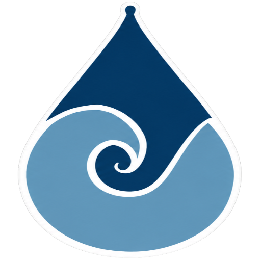

Mede o fluxo
O sensor de vazão YF-S201 gera pulsos conforme a água passa pela tubulação. O ESP8266 interpreta esses sinais e estima o fluxo.
O HydroStats acompanha o fluxo de água e organiza as leituras em informações fáceis de entender. Mais visibilidade para identificar hábitos e incentivar escolhas conscientes.

O sistema combina sensores e uma interface web para tornar as leituras úteis no dia a dia.
O sensor de vazão YF-S201 gera pulsos conforme a água passa pela tubulação. O ESP8266 interpreta esses sinais e estima o fluxo.
Conectado à rede, o ESP8266 publica as leituras via MQTT para que os dados possam chegar à aplicação de monitoramento.
O painel reúne fluxo, consumo por período, comparações, estado dos dispositivos e alertas em uma interface acessível.
Além dos dados digitais, o protótipo oferece sinais locais para facilitar a leitura do sistema e chamar atenção para situações relevantes.
Explore o painelMicrocontrolador e sensor de fluxo formam a base para captar e processar as leituras de água.
Exibe informações essenciais diretamente no protótipo, sem depender do acesso ao painel.
Indicadores visuais e sonoros podem sinalizar estados e alertas definidos para o sistema.
Mensagens publicadas pelo dispositivo alimentam uma experiência web com leituras, histórico e acompanhamento.
Conhecer o próprio consumo é um passo importante para perceber padrões, conversar sobre desperdício e apoiar decisões mais responsáveis. O HydroStats aproxima instrumentação e conscientização em um projeto educacional.
O projeto aproxima tecnologia e aprendizagem aplicada para incentivar a eficiência no uso da água, em diálogo com o ODS 6 e sua meta 6.a.
Conheça o ODS 6Acesse o painel para visualizar indicadores, histórico de consumo e estado dos dispositivos.
Entrar no HydroStats